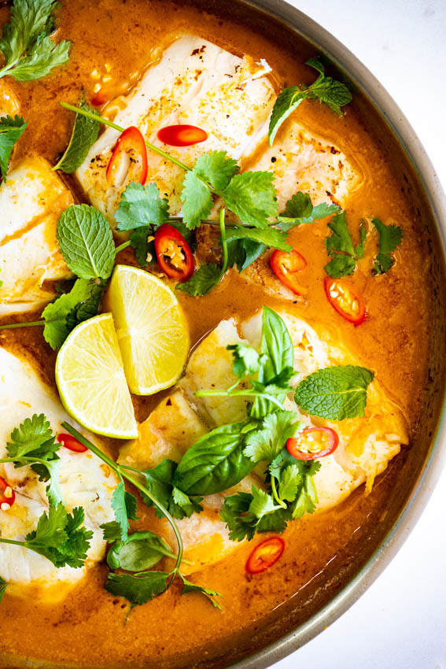

Thai Monkfish Curry

Description
Fragrant, warming and delicious curry-tinged soup, lovely over rice. Adjust curry paste to increase or decrease heat. Curry paste is available in jars in Asian stores and the international aisle of many grocery stores.
Ingredients
- 1 tablespoon peanut oil
- 1/2 sweet onion, finely chopped
- 1 red bell pepper, chopped
- 3 tablespoons red Thai curry paste
- 1 (14 ounce) can coconut milk
- 12 ounces monkfish, cut into cubes
- 1 tablespoon fish sauce
- 2 tablespoons lime juice
- 2 tablespoons cilantro, chopped
Steps
- Heat peanut oil in a large sauce pan over medium heat. Stir in chopped onion, and cook until softened and translucent, 3 to 5 minutes. Add red bell pepper and continue to cook for 3 to 5 more minutes, until softened. Stir in the curry paste and cook for 1 minute. Pour in the coconut milk and slowly bring to a simmer.
- Once coconut milk begins to simmer, stir in cubed monkfish, and simmer 7 to 10 minutes, or until the fish is firm and the center is no longer opaque. Stir in fish sauce, lime juice, and cilantro before serving.